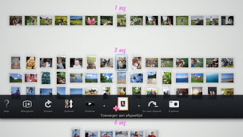

Een afspeellijst van geselecteerde foto's aanmaken
U kunt foto's selecteren om een afspeellijst aan te maken. Met een afspeellijst kunt u de geselecteerde foto's om het even wanneer in dezelfde volgorde bekijken.
Een afspeellijst aanmaken
1. |
Selecteer bij [Gebied bibliotheek] een foto die u wilt toevoegen aan de afspeellijst, druk daarna op de  |
||||||||||||
|---|---|---|---|---|---|---|---|---|---|---|---|---|---|
2. |
Gebruik de linkerjoystick om naar een leeg gebied in [Gebied afspeellijst] te gaan en druk op de |
||||||||||||
3. |
Stel de volgende opties in voor de afspeellijst.
|
 (Toevoegen aan afspeellijst).
(Toevoegen aan afspeellijst). -toets.
-toets.
 (Muziek) categorie in het XMB™-scherm.
(Muziek) categorie in het XMB™-scherm.Opmerkingen
- De instellingen voor de afspeellijst kunnen later worden bewerkt onder (Bewerken).
- Elke afspeellijst kan afzonderlijk worden ingesteld.
Foto's toevoegen aan een afspeellijst
1. |
Selecteer de foto's die u aan de afspeellijst wilt toevoegen. Druk op de |
|---|---|
2. |
Selecteert de afspeellijst en druk vervolgens op de |
De instellingen voor een Afspeellijst bewerken
U kunt de instellingen voor een afspeellijst bewerken. Selecteer de afspeellijst die u wilt bewerken en druk op de  -toets. Selecteer vervolgens (Bewerken).
-toets. Selecteer vervolgens (Bewerken).
Een afspeellijst verplaatsen
U kunt een afspeellijst verplaatsen naar een andere locatie. Selecteer de afspeellijst die u wilt verplaatsen en druk op de -toets. Selecteer vervolgens  (Verplaatsen). U kunt de afspeellijst verplaatsen met behulp van de linker joystick.
(Verplaatsen). U kunt de afspeellijst verplaatsen met behulp van de linker joystick.
Opmerking
U kunt een afspeellijst ook verplaatsen zonder het menu te openen. Selecteer de afspeellijst. Houd de  -toets ingedrukt en gebruik de linker joystick om de afspeellijst te verplaatsen.
-toets ingedrukt en gebruik de linker joystick om de afspeellijst te verplaatsen.
Een afspeellijst verwijderen
Om een afspeellijst te verwijderen, selecteert u de afspeellijst die u wilt verwijderen, drukt u op de -toets en selecteert u  (Verwijderen).
(Verwijderen).